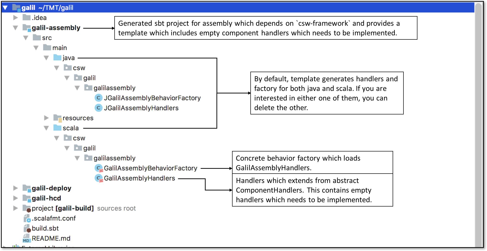
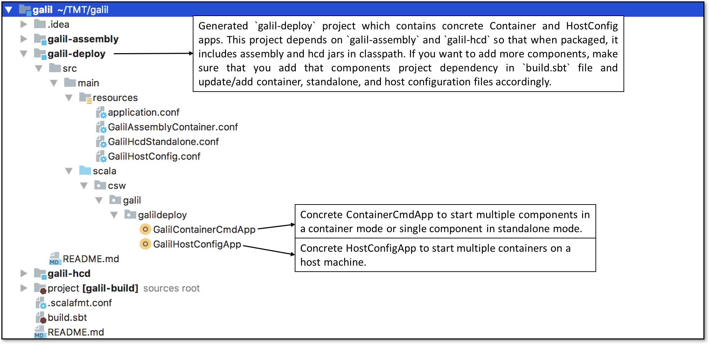
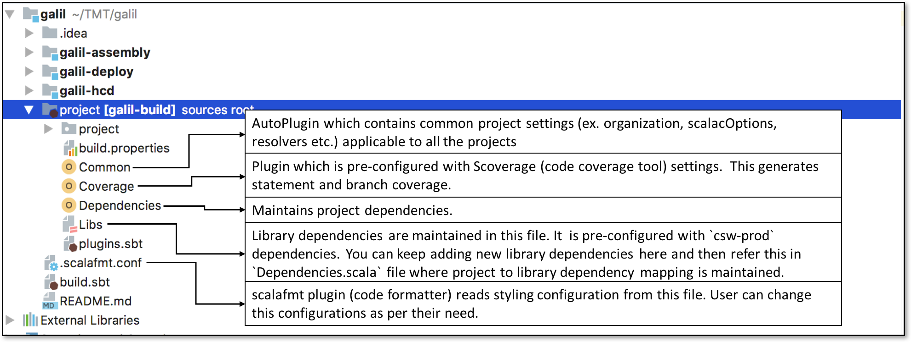

Getting Started
In this tutorial, you’ll see how to create a Scala/Java project from csw.g8 template which contains sample handlers for creating HCD and Assembly. It also contains a deploy project which is responsible for starting multiple components or containers. You can use this as a starting point for your own projects for writing component. We’ll use sbt build tool which compiles, runs, and tests your projects among other related tasks.
Installation
- Make sure you have the Java 8 JDK (also known as 1.8)
- Run
javac -versionin the command line and make sure you seejavac 1.8.___ - If you don’t have version 1.8 or higher, install the JDK
- Run
- Install sbt
- Install IntelliJ
- Install following IntelliJ Plugins
- Scala
- Scalafmt
- Supported Operating Systems are: CentOS and MacOS
- Testing frameworks/tools:
Create project
cdto an empty folder.- Run the following command
sbt new tmtsoftware/csw.g8. This pulls the ‘csw’ template from GitHub. If above command fails to pull template, then try running with full pathsbt new https://github.com/tmtsoftware/csw.g8 - Provide input details when prompted. Follow readme.md for detailed information about input parameters.
- Let’s take a look at what just got generated:
For example, project was created with default parameters, then complete project structure looks like this:
- As you can see in below snapshot, template will create three projects:
galil-assemblygalil-hcdgalil-deploy
 2. galil-deploy project contains concrete implementation
 3. Template comes with csw-prod and other useful library dependencies. It also includes bunch of plugins as explained in below snapshot

Add new sbt project module
If you want to add a new project with name galil-io, then follow below steps:
-
Add library dependencies required by
galil-ioinLibs.scalafile, if it does not exist.val `akka-actor` = "com.typesafe.akka" %% "akka-actor" % "2.5.11" -
Map new/existing library dependencies in
Dependencies.scalafile against new project.val GalilIO = Seq( Libs.`akka-actor` ) -
Include below snippet in
build.sbtfile, this will create new sbt project module.lazy val `galil-io` = project .settings( libraryDependencies ++= Dependencies.GalilIO )
Running Components
Pre-requisite
galil-deploy project contains applications (ContainerCmd and HostConfig) to run your components, make sure you add necessary dependencies in galil-deploy project. You can add project dependency in build.sbt file as follows:
lazy val `galil-deploy` = project
.dependsOn(
`galil-assembly`,
`galil-hcd`
)
Run
As seen above galil-deploy depends on galil-assembly and galil-hcd, now if you want to start these Assembly and HCD, follow below steps:
- Run
sbt galil-deploy/universal:packageBin, this will create self contained zip ingalil-deploy/target/universaldirectory - Unzip generated zip file and enter into
bindirectory - You will see four scripts in
bindirectory (two bash scripts and two windows scripts) - If you want to start multiple containers on a host machine, follow this guide here
- If you want to start multiple components in container mode or single component in standalone mode, follow this guide here
- Example to run container:
./galil-container-cmd-app --local ../../../../galil-deploy/src/main/resources/GalilAssemblyContainer.conf - Example to run host config:
./galil-host-config-app --local ../../../../galil-deploy/src/main/resources/GalilHostConfig.conf -s ./galil-container-cmd-app
CSW Location Service cluster seed must be running, and appropriate environment variables set to run apps. See https://tmtsoftware.github.io/csw-prod/apps/cswclusterseed.html .